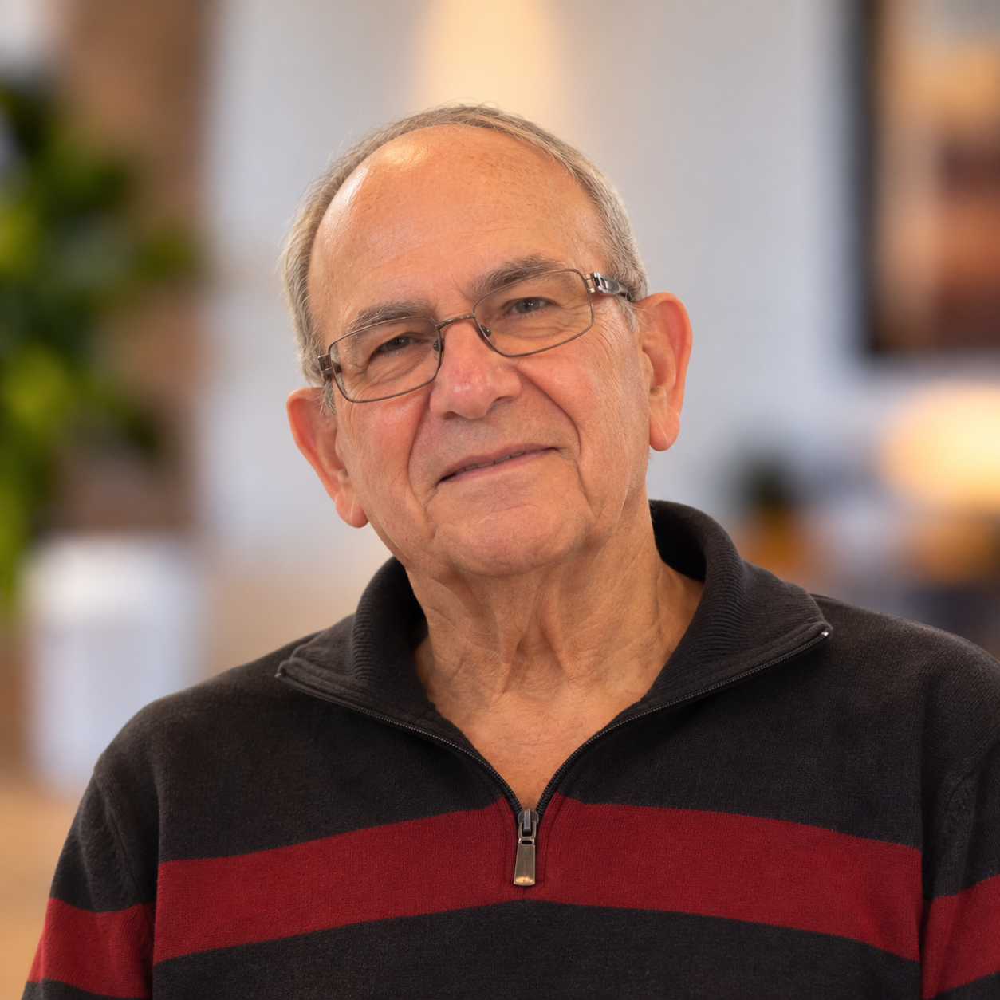

Leadership Team
Harvey Elefson
Treasurer
Harvey Elefson serves as Treasurer of Congregation Tifereth Israel for the 2026 board cycle.
As Treasurer, he is part of the elected leadership responsible for helping steward the congregation’s financial and organizational life.
Additional biographical information will be added here as it becomes available.
